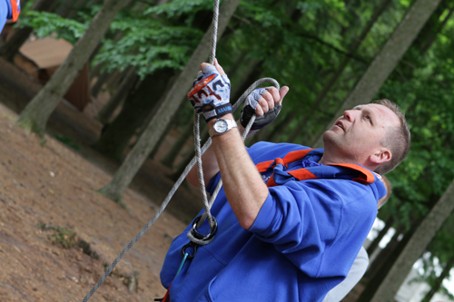
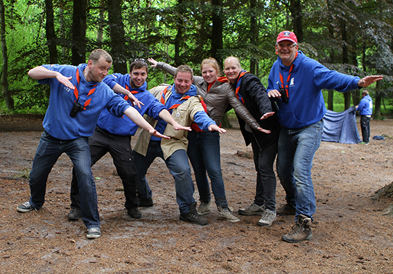
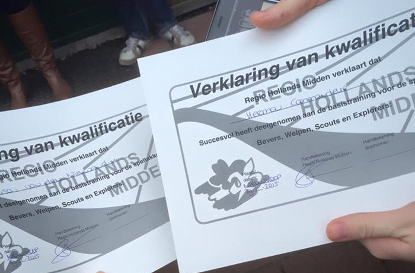
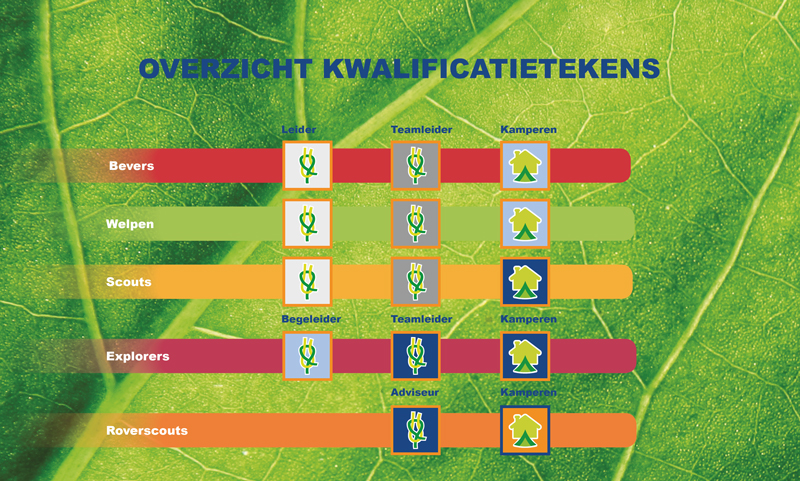

Vrijwilligers
Vrijwilligers
Er is een groot aantal vrijwilligers actief bij Scouting Bosgeest die allemaal zeer enthousiast leiding geven. Een groot deel van de vrijwilligers is zelf jeugdlid geweest bij scouting, en niet altijd bij Scouting Bosgeest. Iedereen bij Scouting Bosgeest is vrijwilliger en krijgt hier geen vergoeding voor. 75% van de vrijwilligers bij scouting is onder de 25 jaar oud. En zo lopen er bij ons ook genoeg jonge, enthousiasten leiders rond. Jong maar niet onervaren. Al onze vrijwilligers worden getraind en gestimuleerd hun grenzen te verleggen zodat ze zelfverzekerd in hun schoenen staan en goed leiding kunnen geven.

Het bestuur van Scouting Bosgeest vindt het belangrijk dat het team van vrijwilligers goed met elkaar kan opschieten én verstand van zaken heeft. Voor (toekomstige) leiding bieden zij daarom diverse trainingen aan, zodat iedere leiding gekwalificeerd is om voor zijn of haar groep te staan. Door de trainingen staan zij sterk in hun schoenen en hebben ze voldoende kennis om een leuk programma in elkaar te zetten voor hun groep. Een keer in de twee jaar gaat een groot deel van de leiding en vrijwilligers van Scouting Bosgeest naar de Scout-in. Dit is een scouting festival voor alle scoutinggroepen uit Nederland. Tijdens dit weekend doen zij veel inspiratie op voor programma’s en er zijn diverse workshops om de kennis up-to-date te houden.

Scouting Academy
Al onze leiding word getraind via het programma ‘Scouting Academy’. Het doel van Scouting Academy is niet alleen het ontwikkelen van vaardigheden. Scouting Academy zorgt er ook voor dat de vaardigheden die je als vrijwilliger binnen Scouting opdoet, ook buiten Scouting van waarde zijn. Daarom worden deze vaardigheden, ook wel ‘competenties’ genoemd, buiten Scouting officieel erkend.

In totaal zijn er 12 modules die weer bestaan uit meerdere competenties. Leiders kunnen competenties en zo ook modules op verschillen manieren aftekenen. Op trainingsweekenden, via online trainingen en in de praktijk. De praktijkbegeleider van onze groep tekent uiteindelijk alle modules af bij de leiding. Ook word onze leiding getraind in EHBO vaardigheden en hoe zij om moeten gaan met de in het clubhuis aanwezige AED.

Bosgeest is een grote, hechte groep die meerdere keren per jaar samen leuke dingen doet: weekendjes weg, barbecueën, een volleybaltoernooi, maar ook spontane namiddagen bij het kampvuur om de opkomst met elkaar door te nemen. Ook buiten scouting om weten de leden elkaar te vinden: als je goed oplet zie je ons op bijna ieder Noordwijkerhouts event terug (o.a. carnaval, Loungefest, Lazy in the Park en de kermis).
VOG
Wie denkt aan kinderen, jongeren en Scouting, denkt direct aan spel, plezier en een uitdagend leven. Niemand associeert deze woorden met ongewenst gedrag. Een verplichte Verklaring Omtrent het Gedrag (VOG) is één van de maatregelen die Scouting Bosgeest getroffen heeft om binnen de vereniging een veilige omgeving voor kinderen te bieden. Daarnaast besteedt Scouting Nederland aandacht aan het onderwerp in trainingen en beschikt Scouting Nederland over een Protocol ongewenst gedrag waar ook wij ons aan houden. Tevens hebben wij een Preventie en Integriteitsbeleid (PDF).
Meer info?
Wil je zelf vrijwilliger worden of meer informatie over het zijn van vrijwilliger? Mail dan naar info@bosgeest.nl